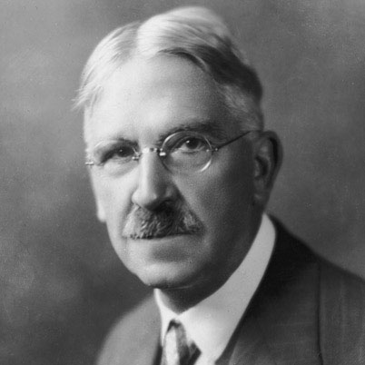
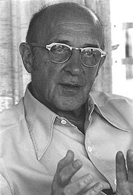
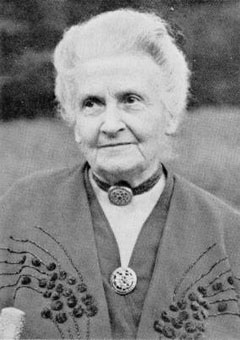
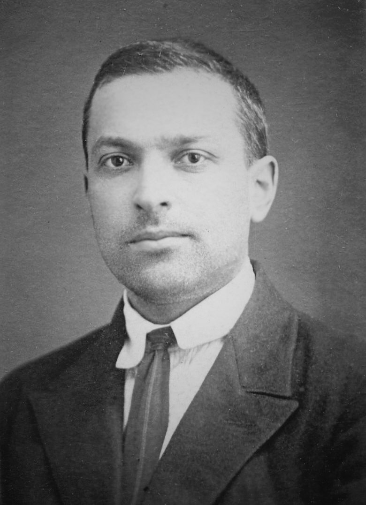
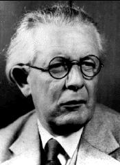

Dewey
Rogers
Montessori
Vygotsky
Piaget
Dewey
Rogers
Montessori
Vygotsky
Piaget





Child-Centered Curriculum and Educational Aims
"The case is of Child. It is his present powers which are to assert themselves;
his present capacities which are to be exercised; his present attitudes which are
to be realized. But save as the teacher knows, knows wisely and thoroughly, the
race-experience which is embodied in that thing we call the Curriculum the teacher
knows neither what the present power, capacity, or attitude is, nor yet how it is
to be asserted, exercised, and realized."
"I believe that education, therefore, is a process of living and not a preparation for future living."
"The teacher is not in the school to impose certain ideas or to form certain habits in the child, but is there as a member of the community to select the influences which shall affect the child and to assist him in properly responding to these influences."
"The actual interests of the child must be discovered if the significance and worth of his life is to be taken into account and full development achieved."
"Teaching can be compared to selling commodities. No one can sell unless someone buys … [yet] there are teachers who think they have done a good day’s teaching irrespective of what pupils have learned."
"A person cannot teach another person directly; a person can only facilitate another's learning."
"A person learns significantly only those things that are perceived as being involved in the
maintenance of or enhancement of the structure of self."
"Experience which, if assimilated, would involve a change in the organization of self, tends to be
resisted through denial or distortion of symbolism."
"The structure and organization of self appears to become more rigid under threats and to relax its
boundaries when completely free from threat."
"The educational situation which most effectively promotes significant learning is one in which (a)
threat to the self of the learner is reduced to a minimum and (b) differentiated perception of the
field is facilitated."
"The only person who is educated is the one who has learned how to learn and change."
"Experience is, for me, the highest authority. The touchstone of validity is my own experience."
"Education is a natural process carried out by the child and is not acquired by listening to words but by experiences in the environment."
"The environment must be rich in motives which lend interest to activity and invite the child to conduct his own experiences."
"Children are human beings to whom respect is due, superior to us by reason of their innocence and of the greater possibilities of their future."
"Never help a child with a task at which he feels he can succeed."
"The environment itself will teach the child, if every error he makes is manifest to him, without the intervention of a parent or teacher, who should remain a quiet observer of all that happens."
"The child can develop fully by means of experience in his environment. We call such experiences 'work'."
"We found individual activity is the one factor that stimulates and produces development."
"Development in children never follows school learning the way a shadow follows the object that casts it. In actuality, there are highly complex dynamic relations between developmental and learning processes that cannot be encompassed by an unchanging hypothetical formulation."
"In the course of development, children change by virtue of the experiences that they previously had, as well as the meaning those experiences have had for them."
"A child's greatest achievements are possible in play, achievements that tomorrow will become her basic level of real action and morality."
"Development is not a simple function which can be wholly determined by adding X units of heredity to Y units of environment. It is a historical complex which, at every stage, reveals the past which is a part of it. . . . Development, according to a well-known definition, is precisely the struggle of opposites."
"As in the focus of a magnifying glass, play contains all developmental tendencies in a condensed form and is itself a major source of development."
"During the earliest stages the child perceives things like a solipsist who is
unaware of himself as subject and is familiar only with his own actions."
"The child no longer tends to approach the state of adulthood by receiving reason
and the rules of right action ready-made,
but by achieving them with his own effort and personal experience;
in return, society expects more of its new generations than mere imitation: it expects enrichment."
"Modern educational science has not emerged from child psychology in the same way
that advances in industrial technique have developed, step by step, from discoveries
of the exact sciences. It is rather the general spirit of psychological research,
and often too, the very methods of observation employed that have energized educational
science in their passage from the field of pure science to that of scholastic experimentation."
John Dewey
Born:
October 20, 1859
Died:
June 1, 1952
Known For:
Pragmatism
Education
Epistemology
Ethics
Carl Rogers
Born:
January 9, 1902
Died:
February 4, 1987
Known For:
Psychology
Person-Centered
Client-Centered
Student-Centered
Maria Montessori
Born:
August 31, 1870
Died:
May 6, 1952
Known For:
Monetessori Method
Physician
Education
Lev Vygotsky
Born:
November 17, 1896
Died:
June 11, 1934
Known For:
Cultural-Historical
Zone of Proximal
Development
Social Dev Theory
Jean Piaget
Born:
August 9, 1896
Died:
Sept 16, 1980
Known For:
Epistemology
Cognitive
Development
Constructivism